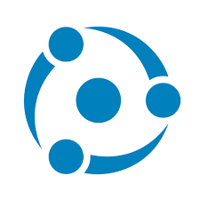
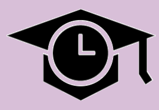
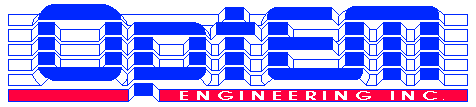

Hello! My name is Nicholas Cervania! I am a fourth year Software
Engineering student at the Schulich School of Engineering at the
University of Calgary. I am a dedicated, results-driven, team player with a
passion for the design and build of innovative technologies.
Hello! My name is Nicholas Cervania! I am a fourth year Software
Engineering student at the Schulich School of Engineering at the
University of Calgary. I am a dedicated, results-driven, team player with a
passion for the design and build of innovative technologies.
During my 12 months of internship, I had the privilege of working for OptEM
Engineering,
where I was directly responsible for the full-stack development and design of the Assembly
Window for software used for the virtual prototyping and anaylsis of high frequency electrical
cable designs in C#.
My internship experience continued into my work at the Canadian Space
Agency, where I developed
custom automation software for the efficient management and inspection of countless large technical
documents in C# and VBA. By utilizing the Agile development process, I was able to
work with the DevOps team to determine specific needs of the Exploration Ground Infrastructure department
of the Space Exploration Branch. Alongside this, I also implemented unit tests using the .NET framework
for new and existing features. My work was able to automate work that would have taken an
unquantifiable amount of time to do manually.
I have extensive experience in Java programming and have been using it
as my main language since 2016. As a Lecture Coordinator of the
organization, Schulich Ignite, I
had an opportunity to learn more about Java and its capabilites, as well
as give back to and educate other members of the community. The
abundance of passion and enthusiasm I brought to each session paved the
way for my position as President of the team, where I organized and
coordinated multiple weekly learning sessions with over 100 students and
mentors each. These mentors were interviewed personally by my team and
I, and together we decided which mentors brought the most to the table.
As a member of the
University of Calgary Solar Car team, I have worked extensively with
C++ in the Qt environment. As part of
my work on the Solar Car Team, I developed the GUI of the dashboard in
Qt. The displays that I designed were used during the 2019 FSGP
worldwide race and helped contribute to our team winning first place in
the MOV category. Developing the dashboard has given me an incredible
opportunity to apply my programming knowledge in unique and challenging
situations while working in a team environment.
The University of Calgary Information Security Club
has given me substantial exposure to information and cyber security. As a junior executive of this club,
I helped to test weekly workshops covering topics regarding cyber security tools in Linux with CTF-style
exercises. I was also able to successfully test several CTF challenges for the annual Magpie CTF Competition.
In addition to the development of CTF challenges and weekly workshops, I competed on the executive team in several
CTF competitions, including the 2021 BSides Edmonton CTF, 2021
K3RN3LCTF, 2021 HackTheBox Uni.
Our team also won first place in the 2022 CyberSci Regionals
Competition.
This website lists more about me and my qualifications. Please, feel
free to browse and email any questions!
Projects
| Icon | Project Name | Description | Date | |
|---|---|---|---|---|
GraduDate |
A social networking platform for post-secondary students developed for Android and iOS devices. A modern client UI was built using React Native and Expo, while the backend microservices were developed using Node.JS, Django, and MongoDB. | February 2023 | Link | |
| 🍤 |
Shrimp Check |
A website that could be left open in the background throughout the day that would randomly play a sound once per user-defined period to remind you to check your posture. Built using HTML, CSS, and JavaScript. | October 2023 | Link |
Ordered TV Watchlist Creator |
A website that used the TVMaze API to generate watchlists for existing TV shows sorted by original airdate. Watchlists could be interacted with directly through the site or exported to a CSV. Built using HTML, CSS, and JavaScript. | December 2022 | Link | |
Discord Bot |
A Discord bot that plays a sitcom sound bite every time a user enters or leaves a voice channel, usually a reference to the beginning or end of a popular sitcom. Built using Python and deployed using Heroku. | April 2022 | Link | |
Netflix Network TV Simulator |
A web-based application that takes advantage of Netflix infrastructure to allow you to sequentially binge multiple shows simultaneously. Users can create a queue of shows, and the app will automatically loop through each show and play each sequential episode. This way, you can binge multiple series without getting burnout or having to touch the mouse. Built using HTML, CSS, and JavaScript. | April 2022 | Link | |
|  |
Energy Toolbase Model Manager |
Capstone project sponsored by Energy Toolbase. This is an internal tool that is used to manage machine learning models and data, with storage to a MongoDB NoSQL database, and an importable registry API available through GitHub Packages. A browser-based UI is available built using Panel by Holoviz in Python. Unit tests were conducted using PyTest. | September 2021 - April 2022 | |
|  |
StudentSynch |
A desktop application used for managing the increasing workload of online education during the COVID-19 Pandemic. Submission for the Calgary Hacks 2021 hackathon. Built using C#. | February 2021 | Link |
 |
Github Pages |
The page you're on right now. Built with HTML, CSS, and JavaScript | May 2020 | Link |
 |
Circle Tap |
An arcade game designed for mobile Android phones. Simple. Addicting. Fun. | May 2020 | Link |
PiaNotes |
A Java based application that interfaces with MIDI keyboards in order to help beginner piano players familiarize themselves with sheet music notation | April 2020 | Link | |
| 🥪 |
Out to Lunch |
A website for users to post reviews and discuss about various restaurants around campus. Utilized Amazon-Web-Services (AWS) technologies alongside a Python and Java backend with a frontend built entirely in React.JS. | March 2020 | Link |

|
Buddy |
An Amazon Alexa™ application aimed at reducing anxiety and
depressive feelings in young adults in a non-threatening,
effortless environment.
Developed a Bootstrap and HTML frontend deployed using Amazon-Web-Services (AWS) and the main matching algorithm for clients and volunteers Received second place out of 45 teams in the Calgary Hacks 2020 Hackathon. |
February 2020 | Link |
 |
Talk to Me |
An Android application designed to generate conversation starters for awkward situations. | January 2020 | Link |
 |
Automatic Google Drive Backup |
A Java program using the Google Drive API that periodically backs up files to the users personal Google Drive upon update. Unlike other cloud services, backed up files can be located anywhere on the disk. Excellent for game save files. Automated builds using Gradle. | December 2019 | Link |
 |
Epsilon Dashboard |
Used the C++ framework Qt to design the digital
dashboard of the Schulich Elysia, the University of Calgary
Solar Car Team's 4th generation car. This included the design
and reorganization of three separate dashboards that relayed
data about the various systems to the drivers.
These dashboards were used during the 2019 Formula Sun Grand Prix in which our team took First Place in the MOV category |
October 2018 | Link |
Visual Novel Engine |
Developed a Processing based application that allows users to create and play their own Visual Novel games. | April 2018 | Link | |
 |
Important Decision Maker |
A Processing application that helps users decide between n>1 decisions. | March 2018 | Link |
Speed Read |
Without the need for the user to move their eyes, users are able to read at an exponentially higher rate. SpeedRead is a Processing program to rapidly display a file of words in order, allowing users to read large documents in a small amount of time. | February 2018 | Link | |
 |
KEYboard |
A Processing application that uses the Minim library to bind the user's keyboard into a set of piano keys, allowing the user to "play" the piano without needing a real one. | January 2018 | |
 |
iNAP |
A Java application that the user can chat with. iNAP recognizes and responds appropriately to depressive symptoms and learns new words and people that the user mentions during conversation. | August 2017 | Link |
Social-Network |
Advanced Placement Computer Science capstone project. A Java social networking application that targets loneliness in High School students. Utilized complexity analysis within object-oriented Java, recursive algorithms, and GUI programming using Java Swing. Implements multithreaded components, and client-server architecture | January 2017 | Link |
Gallery


Skills
Proficient with
| Java | C | C++ |
| C# | Python | |
| HTML | CSS | JavaScript |
Familiar with
| Ruby | SQL |
| Bash | PHP |
| VBA | Golang |
Tools and Technologies
| Git | Bash | Qt |
| React.JS | Node.JS | React Native |
| OpenSearch | MongoDB | Django |
| Docker | MySQL |
Experience
Previous Work Experience
| Company | Role | Responsiblities | Date | |
|---|---|---|---|---|

|
Cisco Systems |
Software Engineer |
|
May 2022 - Current |
Canadian Space Agency |
Software Developer Intern |
|
January-August 2021 | |
|  |
OptEM Engineering |
Junior Software Developer |
|
September-December 2021 |

|
Vermilion Energy |
IT Summer Student |
|
May-August 2019 |
Calgary Stampede |
ATCO Lost Kids |
|
July 2018 |
Clubs/Teams/Volunteering Activities
| Name | Responsiblities | |
|---|---|---|
 |
UofC Information Security Club |
|
 |
The Gauntlet |
|

|
Schulich Ignite |
|
|
University of Calgary Solar Car Team |
|
Contact